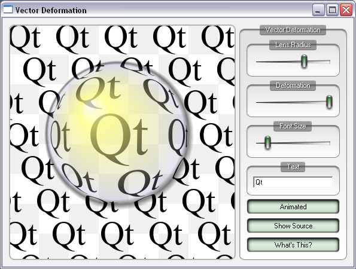

Vector Deformation
Demonstrates how to manipulate the elements of a QPainterPath.

We define a vector deformation field in the shape of a lens and apply this to all points in a path. This means that what is rendered on screen is not pixel manipulation, but modified vector representations of the glyphs themselves. This is visible from the high quality of the antialiased edges for the deformed glyphs.
To get a fairly complex path we allow the user to type in text and convert the text to paths. This is done using the QPainterPath::addText() function.
The lens is drawn using a single call to QPainter::drawEllipse(), using a QRadialGradient to fill it with a specialized color table, giving the effect of the sun's reflection and a drop shadow. The lens is cached as a pixmap for better performance.